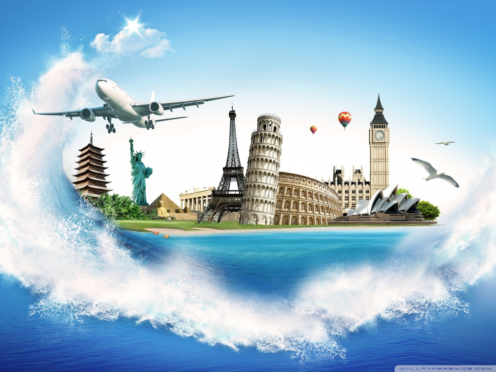

To travel from one place to another in different purposes is generally called travelling. People do not travel always in the same purposes. Someone travels to gain knowledge and experience, someone travels for pleasure, someone travels for business purposes etc. It has much educative value. It is a part of education. Our education and book knowledge remain imperfect without travelling. We can learn many things by travelling. It teaches us trade and commerce, language, sociology, customs, culture, history, geography and so on. Therefore, the educative value of travelling beggars description.
The World Is A Book, And Those Who Do Not Travel Read Only A Page
SAINT AUGUSTINE